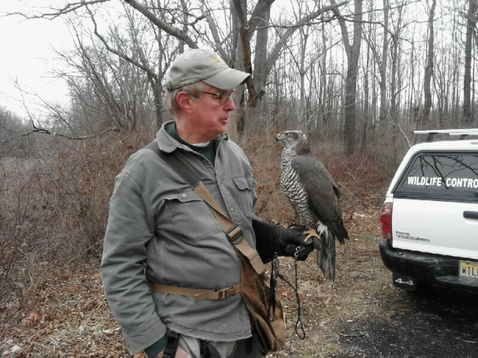
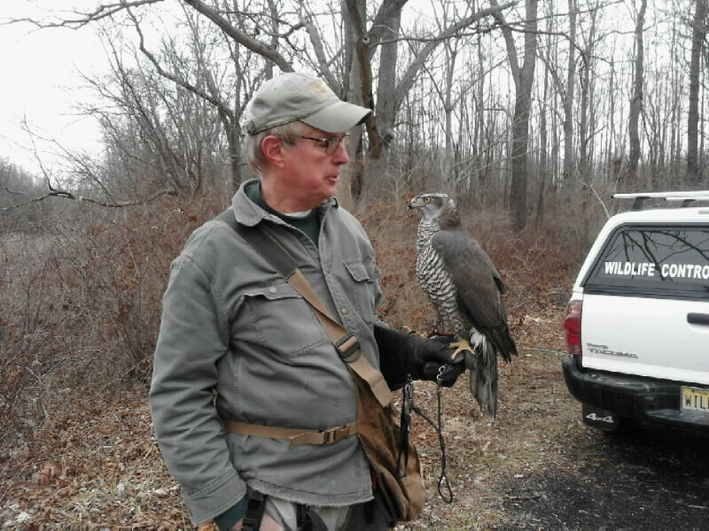

About Rising Falcon
Friendly, Welcoming and Dedicated
Back
 

About Us.
Our centre is based in Ormskirk and is home to many species of Owls, Hawks, Falcons, our Eagles Freedom and Patriot, along with our family of Ferrets and our family of 3 Red Pandas.
We have an on site Gift Shop, Education Centre, Medical Room & Rehabilitation Area, Outdoor Flying Area, Indoor Training Area, Large Weathering Lawn for Falcons and Hawks, alongside our many Large Aviaries. Hot & Cold Drinks are available on site.
Capacity for Rescues.
We are now at absolute capacity for Rescues and have had to make the very hard decision to close for any further admissions. We have never had to do this before but to ensure the Welfare of the birds already with us this will have to be for the foreseeable future. If you need help with A Bird of Prey please check this site www.helpwildlife.co.uk We apologise for any inconvenience.
Thank you for your continued support and understanding, Team Wild Wings.